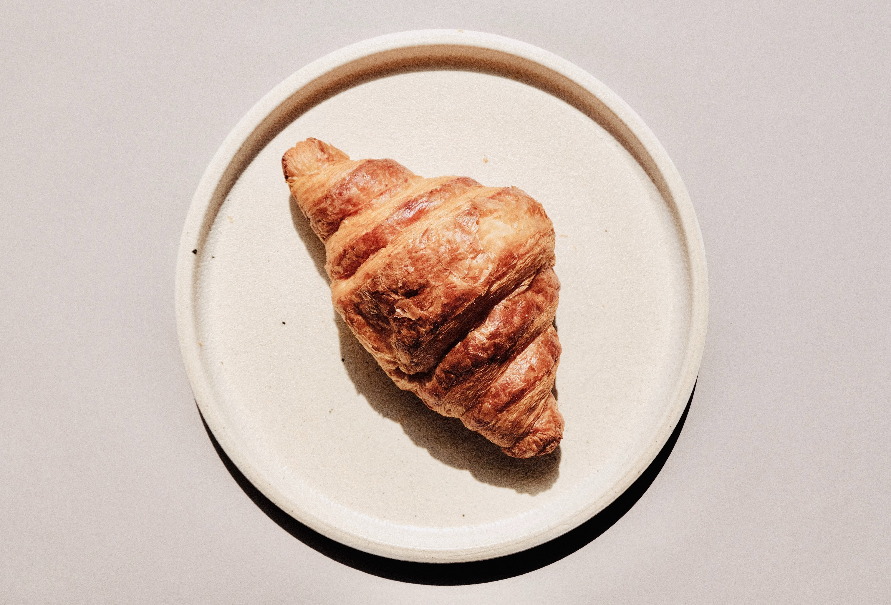

집에 먹을 게 없다. 오늘은 필라테스 하러 가는 날인데 운동 끝나고 집에 돌아오는 길에 장을 보고 돌아와야겠다. 우유, 달걀, 시리얼, 빵 그리고 뭐 사지? 동생들한테 물어봐야겠다. 결국 장은 다음날에 봤다! 동생 퇴근시간에 맞춰 마트에가서 달걀, 우유먼저 담았다. 딸기가 세일하는데 마지막 딸기라고해서 엄마, 아빠랑 같이 먹으려고 하나 담았다. 
최근에는 abc주스 챙겨먹는데, 아주 건강해지는 느낌이다. 다 먹어서 하나 사려는데 동생은 안먹는대서 이건 생활비 말고 따로 사야한다. 아 그리고 두부텐더도 샀다! 쿠팡보다 싸게팔아서 사봤다. 엄마아빠집에 갔는데, 아빠는 맨날 우리가 장본거 확인한다. 뭐 샀는지 궁금한가보다. 저녁먹고 후식으로 사온 딸기먹으면서 일일드라마를 봤다. 으 막장드라마.. 드라마보는데 스트레스 쌓인다.. 집가서 장본거 정리했다.